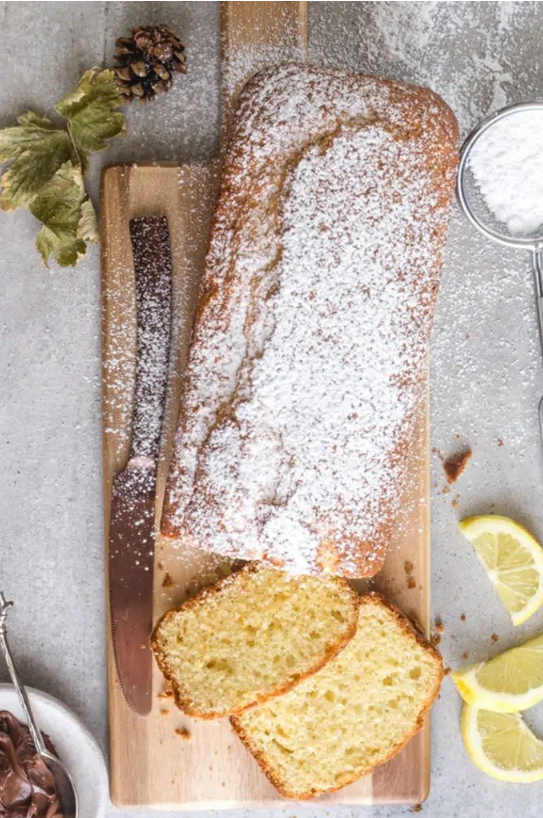

The first time I tried this cake I was at a friend’s house. She asked if I would like to try a piece of Plumcake. At first I thanked her and said I had just eaten and I wasn’t hungry at the time, needless to say didn’t want to admit to the fact that I wasn’t crazy about plums.I
Let's cook an unforgetable Plumcake!
I discovered a few reasons, one being that it is actually a take on the English Plumcake which is actually made with candied fruit, it is also thought that it was taken from an English cake called the poundcake.
Where the term pound indicates in the classic pound cake is the same amount of measurement for each ingredient (one pound of flour, one of eggs, one of butter, one of sugar and one of fruit) in order to make it easier to remember the recipe.
In a large bowl beat on medium speed the eggs and sugar until creamy and light, approximately 5 minutes, then add the yogurt, oil and vanilla and combine, add the sifted ingredients, beat on medium speed for about 2 minutes.
Spoon into prepared loaf pan. Bake for approximately 30-40 minutes or until toothpick comes out clean or with a few crumbs attached. Let cool before serving. Dust with icing sugar if desired. Enjoy!